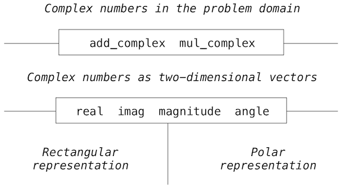

2.7 泛用方法
译者：飞龙
这一章中我们引入了复合数据类型，以及由构造器和选择器实现的数据抽象机制。使用消息传递，我们就能使抽象数据类型直接拥有行为。使用对象隐喻，我们可以将数据的表示和用于操作数据的方法绑定在一起，从而使数据驱动的程序模块化，并带有局部状态。
但是，我们仍然必须展示，我们的对象系统允许我们在大型程序中灵活组合不同类型的对象。点运算符的消息传递仅仅是一种用于使用多个对象构建组合表达式的方式。这一节中，我们会探索一些用于组合和操作不同类型对象的方式。
2.7.1 字符串转换
我们在这一章最开始说，对象值的行为应该类似它所表达的数据，包括产生它自己的字符串表示。数据值的字符串表示在类似 Python 的交互式语言中尤其重要，其中“读取-求值-打印”的循环需要每个值都拥有某种字符串表示形式。
字符串值为人们的信息交流提供了基础的媒介。字符序列可以在屏幕上渲染，打印到纸上，大声朗读，转换为盲文，或者以莫尔兹码广播。字符串对编程而言也非常基础，因为它们可以表示 Python 表达式。对于一个对象，我们可能希望生成一个字符串，当作为 Python 表达式解释时，求值为等价的对象。
Python 规定，所有对象都应该能够产生两种不同的字符串表示：一种是人类可解释的文本，另一种是 Python 可解释的表达式。字符串的构造函数str返回人类可读的字符串。在可能的情况下，repr函数返回一个 Python 表达式，它可以求值为等价的对象。repr的文档字符串解释了这个特性：
repr(object) -> string
Return the canonical string representation of the object.
For most object types, eval(repr(object)) == object.
在表达式的值上调用repr的结果就是 Python 在交互式会话中打印的东西。
>>> 12e12
12000000000000.0
>>> print(repr(12e12))
12000000000000.0
在不存在任何可以求值为原始值的表达式的情况中，Python 会产生一个代理：
>>> repr(min)
'<built-in function min>'
str构造器通常与repr相同，但是有时会提供更加可解释的文本表示。例如，我们可以看到str和repr对于日期的不同：
>>> from datetime import date
>>> today = date(2011, 9, 12)
>>> repr(today)
'datetime.date(2011, 9, 12)'
>>> str(today)
'2011-09-12'
repr函数的定义出现了新的挑战：我们希望它对所有数据类型都正确应用，甚至是那些在repr实现时还不存在的类型。我们希望它像一个多态函数，可以作用于许多（多）不同形式（态）的数据。
消息传递提供了这个问题的解决方案：repr函数在参数上调用叫做__repr__的函数。
>>> today.__repr__()
'datetime.date(2011, 9, 12)'
通过在用户定义的类上实现同一方法，我们就可以将repr的适用性扩展到任何我们以后创建的类。这个例子强调了消息传递的另一个普遍的好处：就是它提供了一种机制，用于将现有函数的职责范围扩展到新的对象。
str构造器以类似的方式实现：它在参数上调用了叫做__str__的方法。
>>> today.__str__()
'2011-09-12'
这些多态函数是一个更普遍原则的例子：特定函数应该作用于多种数据类型。这里举例的消息传递方法仅仅是多态函数实现家族的一员。本节剩下的部分会探索一些备选方案。
2.7.2 多重表示
使用对象或函数的数据抽象是用于管理复杂性的强大工具。抽象数据类型允许我们在数据表示和用于操作数据的函数之间构造界限。但是，在大型程序中，对于程序中的某种数据类型，提及“底层表示”可能不总是有意义。首先，一个数据对象可能有多种实用的表示，而且我们可能希望设计能够处理多重表示的系统。
为了选取一个简单的示例，复数可以用两种几乎等价的方式来表示：直角坐标（虚部和实部）以及极坐标（模和角度）。有时直角坐标形式更加合适，而有时极坐标形式更加合适。复数以两种方式表示，而操作复数的函数可以处理每种表示，这样一个系统确实比较合理。
更重要的是，大型软件系统工程通常由许多人设计，并花费大量时间，需求的主题随时间而改变。在这样的环境中，每个人都事先同意数据表示的方案是不可能的。除了隔离使用和表示的数据抽象的界限，我们需要隔离不同设计方案的界限，以及允许不同方案在一个程序中共存。进一步，由于大型程序通常通过组合已存在的模块创建，这些模块会单独设计，我们需要一种惯例，让程序员将模块递增地组合为大型系统。也就是说，不需要重复设计或实现这些模块。
我们以最简单的复数示例开始。我们会看到，消息传递在维持“复数”对象的抽象概念时，如何让我们为复数的表示设计出分离的直角坐标和极坐标表示。我们会通过使用泛用选择器为复数定义算数函数（add_complex，mul_complex）来完成它。泛用选择器可访问复数的一部分，独立于数值表示的方式。所产生的复数系统包含两种不同类型的抽象界限。它们隔离了高阶操作和低阶表示。此外，也有一个垂直的界限，它使我们能够独立设计替代的表示。

作为边注，我们正在开发一个系统，它在复数上执行算数运算，作为一个简单但不现实的使用泛用操作的例子。复数类型实际上在 Python 中已经内建了，但是这个例子中我们仍然自己实现。
就像有理数那样，复数可以自然表示为偶对。复数集可以看做带有两个正交轴，实数轴和虚数轴的二维空间。根据这个观点，复数z = x + y * i（其中i*i = -1）可以看做平面上的点，它的实数为x，虚部为y。复数加法涉及到将它们的实部和虚部相加。
对复数做乘法时，将复数以极坐标表示为模和角度更加自然。两个复数的乘积是，将一个复数按照另一个的长度作为因数拉伸，之后按照另一个的角度来旋转它的所得结果。
所以，复数有两种不同表示，它们适用于不同的操作。然而，从一些人编写使用复数的程序的角度来看，数据抽象的原则表明，所有操作复数的运算都应该可用，无论计算机使用了哪个表示。
接口。 消息传递并不仅仅提供用于组装行为和数据的方式。它也允许不同的数据类型以不同方式响应相同消息。来自不同对象，产生相似行为的共享消息是抽象的有力手段。
像之前看到的那样，抽象数据类型由构造器、选择器和额外的行为条件定义。与之紧密相关的概念是接口，它是共享消息的集合，带有它们含义的规定。响应__repr__和__str__特殊方法的对象都实现了通用的接口，它们可以表示为字符串。
在复数的例子中，接口需要实现由四个消息组成的算数运算：real，imag，magnitude和angle。我们可以使用这些消息实现加法和乘法。
我们拥有两种复数的抽象数据类型，它们的构造器不同。
ComplexRI从实部和虚部构造复数。ComplexMA从模和角度构造复数。
使用这些消息和构造器，我们可以实现复数算数：
>>> def add_complex(z1, z2):
return ComplexRI(z1.real + z2.real, z1.imag + z2.imag)
>>> def mul_complex(z1, z2):
return ComplexMA(z1.magnitude * z2.magnitude, z1.angle + z2.angle)
术语“抽象数据类型”（ADT）和“接口”的关系是微妙的。ADT 包含构建复杂数据类的方式，以单元操作它们，并且可以选择它们的组件。在面向对象系统中，ADT 对应一个类，虽然我们已经看到对象系统并不需要实现 ADT。接口是一组与含义关联的消息，并且它可能包含选择器，也可能不包含。概念上，ADT 描述了一类东西的完整抽象表示，而接口规定了可能在许多东西之间共享的行为。
属性（Property）。 我们希望交替使用复数的两种类型，但是对于每个数值来说，储存重复的信息比较浪费。我们希望储存实部-虚部的表示或模-角度的表示之一。
Python 拥有一个简单的特性，用于从零个参数的函数凭空计算属性（Attribute）。@property装饰器允许函数不使用标准调用表达式语法来调用。根据实部和虚部的复数实现展示了这一点。
>>> from math import atan2
>>> class ComplexRI(object):
def __init__(self, real, imag):
self.real = real
self.imag = imag
@property
def magnitude(self):
return (self.real ** 2 + self.imag ** 2) ** 0.5
@property
def angle(self):
return atan2(self.imag, self.real)
def __repr__(self):
return 'ComplexRI({0}, {1})'.format(self.real, self.imag)
第二种使用模和角度的实现提供了相同接口，因为它响应同一组消息。
>>> from math import sin, cos
>>> class ComplexMA(object):
def __init__(self, magnitude, angle):
self.magnitude = magnitude
self.angle = angle
@property
def real(self):
return self.magnitude * cos(self.angle)
@property
def imag(self):
return self.magnitude * sin(self.angle)
def __repr__(self):
return 'ComplexMA({0}, {1})'.format(self.magnitude, self.angle)
实际上，我们的add_complex和mul_complex实现并没有完成；每个复数类可以用于任何算数函数的任何参数。对象系统不以任何方式显式连接（例如通过继承）这两种复数类型，这需要给个注解。我们已经通过在两个类之间共享一组通用的消息和接口，实现了复数抽象。
>>> from math import pi
>>> add_complex(ComplexRI(1, 2), ComplexMA(2, pi/2))
ComplexRI(1.0000000000000002, 4.0)
>>> mul_complex(ComplexRI(0, 1), ComplexRI(0, 1))
ComplexMA(1.0, 3.141592653589793)
编码多种表示的接口拥有良好的特性。用于每个表示的类可以独立开发；它们只需要遵循它们所共享的属性名称。这个接口同时是递增的。如果另一个程序员希望向相同程序添加第三个复数表示，它们只需要使用相同属性创建另一个类。
特殊方法。 内建的算数运算符可以以一种和repr相同的方式扩展；它们是特殊的方法名称，对应 Python 的算数、逻辑和序列运算的运算符。
为了使我们的代码更加易读，我们可能希望在执行复数加法和乘法时直接使用+和*运算符。将下列方法添加到两个复数类中，这会让这些运算符，以及opertor模块中的add和mul函数可用。
>>> ComplexRI.__add__ = lambda self, other: add_complex(self, other)
>>> ComplexMA.__add__ = lambda self, other: add_complex(self, other)
>>> ComplexRI.__mul__ = lambda self, other: mul_complex(self, other)
>>> ComplexMA.__mul__ = lambda self, other: mul_complex(self, other)
现在，我们可以对我们的自定义类使用中缀符号。
>>> ComplexRI(1, 2) + ComplexMA(2, 0)
ComplexRI(3.0, 2.0)
>>> ComplexRI(0, 1) * ComplexRI(0, 1)
ComplexMA(1.0, 3.141592653589793)
扩展阅读。 为了求解含有+运算符的表达式，Python 会检查表达式的左操作数和右操作数上的特殊方法。首先，Python 会检查左操作数的__add__方法，之后检查右操作数的__radd__方法。如果二者之一被发现，这个方法会以另一个操作数的值作为参数调用。
在 Python 中求解含有任何类型的运算符的表达值具有相似的协议，这包括切片符号和布尔运算符。Python 文档列出了完整的运算符的方法名称。Dive into Python 3 的特殊方法名称一章描述了许多用于 Python 解释器的细节。
2.7.3 泛用函数
我们的复数实现创建了两种数据类型，它们对于add_complex和mul_complex函数能够互相转换。现在我们要看看如何使用相同的概念，不仅仅定义不同表示上的泛用操作，也能用来定义不同种类、并且不共享通用结构的参数上的泛用操作。
我们到目前为止已定义的操作将不同的数据类型独立对待。所以，存在用于加法的独立的包，比如两个有理数或者两个复数。我们没有考虑到的是，定义类型界限之间的操作很有意义，比如将复数与有理数相加。我们经历了巨大的痛苦，引入了程序中各个部分的界限，便于让它们可被独立开发和理解。
我们希望以某种精确控制的方式引入跨类型的操作。便于在不严重违反抽象界限的情况下支持它们。在我们希望的结果之间可能有些矛盾：我们希望能够将有理数与复数相加，也希望能够使用泛用的add函数，正确处理所有数值类型。同时，我们希望隔离复数和有理数的细节，来维持程序的模块化。
让我们使用 Python 内建的对象系统重新编写有理数的实现。像之前一样，我们在较低层级将有理数储存为分子和分母。
>>> from fractions import gcd
>>> class Rational(object):
def __init__(self, numer, denom):
g = gcd(numer, denom)
self.numer = numer // g
self.denom = denom // g
def __repr__(self):
return 'Rational({0}, {1})'.format(self.numer, self.denom)
这个新的实现中的有理数的加法和乘法和之前类似。
>>> def add_rational(x, y):
nx, dx = x.numer, x.denom
ny, dy = y.numer, y.denom
return Rational(nx * dy + ny * dx, dx * dy)
>>> def mul_rational(x, y):
return Rational(x.numer * y.numer, x.denom * y.denom)
类型分发。 一种处理跨类型操作的方式是为每种可能的类型组合设计不同的函数，操作可用于这种类型。例如，我们可以扩展我们的复数实现，使其提供函数用于将复数与有理数相加。我们可以使用叫做类型分发的机制更通用地提供这个功能。
类型分发的概念是，编写一个函数，首先检测接受到的参数类型，之后执行适用于这种类型的代码。Python 中，对象类型可以使用内建的type函数来检测。
>>> def iscomplex(z):
return type(z) in (ComplexRI, ComplexMA)
>>> def isrational(z):
return type(z) == Rational
这里，我们依赖一个事实，每个对象都知道自己的类型，并且我们可以使用Python 的type函数来获取类型。即使type函数不可用，我们也能根据Rational，ComplexRI和ComplexMA来实现iscomplex和isrational。
现在考虑下面的add实现，它显式检查了两个参数的类型。我们不会在这个例子中显式使用 Python 的特殊方法（例如__add__）。
>>> def add_complex_and_rational(z, r):
return ComplexRI(z.real + r.numer/r.denom, z.imag)
>>> def add(z1, z2):
"""Add z1 and z2, which may be complex or rational."""
if iscomplex(z1) and iscomplex(z2):
return add_complex(z1, z2)
elif iscomplex(z1) and isrational(z2):
return add_complex_and_rational(z1, z2)
elif isrational(z1) and iscomplex(z2):
return add_complex_and_rational(z2, z1)
else:
return add_rational(z1, z2)
这个简单的类型分发方式并不是递增的，它使用了大量的条件语句。如果另一个数值类型包含在程序中，我们需要使用新的语句重新实现add。
我们可以创建更灵活的add实现，通过以字典实现类型分发。要想扩展add的灵活性，第一步是为我们的类创建一个tag集合，抽离两个复数集合的实现。
>>> def type_tag(x):
return type_tag.tags[type(x)]
>>> type_tag.tags = {ComplexRI: 'com', ComplexMA: 'com', Rational: 'rat'}
下面，我们使用这些类型标签来索引字典，字典中储存了数值加法的不同方式。字典的键是类型标签的元素，值是类型特定的加法函数。
>>> def add(z1, z2):
types = (type_tag(z1), type_tag(z2))
return add.implementations[types](z1, z2)
add函数的定义本身没有任何功能；它完全地依赖于一个叫做add.implementations的字典去实现泛用加法。我们可以构建如下的字典。
>>> add.implementations = {}
>>> add.implementations[('com', 'com')] = add_complex
>>> add.implementations[('com', 'rat')] = add_complex_and_rational
>>> add.implementations[('rat', 'com')] = lambda x, y: add_complex_and_rational(y, x)
>>> add.implementations[('rat', 'rat')] = add_rational
这个基于字典的分发方式是递增的，因为add.implementations和type_tag.tags总是可以扩展。任何新的数值类型可以将自己“安装”到现存的系统中，通过向这些字典添加新的条目。
当我们向系统引入一些复杂性时，我们现在拥有了泛用、可扩展的add函数，可以处理混合类型。
>>> add(ComplexRI(1.5, 0), Rational(3, 2))
ComplexRI(3.0, 0)
>>> add(Rational(5, 3), Rational(1, 2))
Rational(13, 6)
数据导向编程。 我们基于字典的add实现并不是特定于加法的；它不包含任何加法的直接逻辑。它只实现了加法操作，因为我们碰巧将implementations字典和函数放到一起来执行加法。
更通用的泛用算数操作版本会将任意运算符作用于任意类型，并且使用字典来储存多种组合的实现。这个完全泛用的实现方法的方式叫做数据导向编程。在我们这里，我们可以实现泛用加法和乘法，而不带任何重复的逻辑。
>>> def apply(operator_name, x, y):
tags = (type_tag(x), type_tag(y))
key = (operator_name, tags)
return apply.implementations[key](x, y)
在泛用的apply函数中，键由操作数的名称（例如add），和参数类型标签的元组构造。我们下面添加了对复数和有理数的乘法支持。
>>> def mul_complex_and_rational(z, r):
return ComplexMA(z.magnitude * r.numer / r.denom, z.angle)
>>> mul_rational_and_complex = lambda r, z: mul_complex_and_rational(z, r)
>>> apply.implementations = {('mul', ('com', 'com')): mul_complex,
('mul', ('com', 'rat')): mul_complex_and_rational,
('mul', ('rat', 'com')): mul_rational_and_complex,
('mul', ('rat', 'rat')): mul_rational}
我们也可以使用字典的update方法，从add中将加法实现添加到apply。
>>> adders = add.implementations.items()
>>> apply.implementations.update({('add', tags):fn for (tags, fn) in adders})
既然已经在单一的表中支持了 8 种不同的实现，我们可以用它来更通用地操作有理数和复数。
>>> apply('add', ComplexRI(1.5, 0), Rational(3, 2))
ComplexRI(3.0, 0)
>>> apply('mul', Rational(1, 2), ComplexMA(10, 1))
ComplexMA(5.0, 1)
这个数据导向的方式管理了跨类型运算符的复杂性，但是十分麻烦。使用这个一个系统，引入新类型的开销不仅仅是为类型编写方法，还有实现跨类型操作的函数的构造和安装。这个负担比起定义类型本身的操作需要更多代码。
当类型分发机制和数据导向编程的确能创造泛用函数的递增实现时，它们就不能有效隔离实现的细节。独立数值类型的实现者需要在编程跨类型操作时考虑其他类型。组合有理数和复数严格上并不是每种类型的范围。在类型中制定一致的责任分工政策，在带有多种类型和跨类型操作的系统设计中是大势所趋。
强制转换。 在完全不相关的类型执行完全不相关的操作的一般情况中，实现显式的跨类型操作，尽管可能非常麻烦，是人们所希望的最佳方案。幸运的是，我们有时可以通过利用类型系统中隐藏的额外结构来做得更好。不同的数据类通常并不是完全独立的，可能有一些方式，一个类型的对象通过它会被看做另一种类型的对象。这个过程叫做强制转换。例如，如果我们被要求将一个有理数和一个复数通过算数来组合，我们可以将有理数看做虚部为零的复数。通过这样做，我们将问题转换为两个复数组合的问题，这可以通过add_complex和mul_complex由经典的方法处理。
通常，我们可以通过设计强制转换函数来实现这个想法。强制转换函数将一个类型的对象转换为另一个类型的等价对象。这里是一个典型的强制转换函数，它将有理数转换为虚部为零的复数。
>>> def rational_to_complex(x):
return ComplexRI(x.numer/x.denom, 0)
现在，我们可以定义强制转换函数的字典。这个字典可以在更多的数值类型引入时扩展。
>>> coercions = {('rat', 'com'): rational_to_complex}
任意类型的数据对象不可能转换为每个其它类型的对象。例如，没有办法将任意的复数强制转换为有理数，所以在coercions字典中应该没有这种转换的实现。
使用coercions字典，我们可以编写叫做coerce_apply的函数，它试图将参数强制转换为相同类型的值，之后仅仅调用运算符。coerce_apply的实现字典不包含任何跨类型运算符的实现。
>>> def coerce_apply(operator_name, x, y):
tx, ty = type_tag(x), type_tag(y)
if tx != ty:
if (tx, ty) in coercions:
tx, x = ty, coercions[(tx, ty)](x)
elif (ty, tx) in coercions:
ty, y = tx, coercions[(ty, tx)](y)
else:
return 'No coercion possible.'
key = (operator_name, tx)
return coerce_apply.implementations[key](x, y)
coerce_apply的implementations仅仅需要一个类型标签，因为它们假设两个值都共享相同的类型标签。所以，我们仅仅需要四个实现来支持复数和有理数上的泛用算数。
>>> coerce_apply.implementations = {('mul', 'com'): mul_complex,
('mul', 'rat'): mul_rational,
('add', 'com'): add_complex,
('add', 'rat'): add_rational}
就地使用这些实现，coerce_apply可以代替apply。
>>> coerce_apply('add', ComplexRI(1.5, 0), Rational(3, 2))
ComplexRI(3.0, 0)
>>> coerce_apply('mul', Rational(1, 2), ComplexMA(10, 1))
ComplexMA(5.0, 1.0)
这个强制转换的模式比起显式定义跨类型运算符的方式具有优势。虽然我们仍然需要编程强制转换函数来关联类型，我们仅仅需要为每对类型编写一个函数，而不是为每个类型组合和每个泛用方法编写不同的函数。我们所期望的是，类型间的合理转换仅仅依赖于类型本身，而不是要调用的特定操作。
强制转换的扩展会带来进一步的优势。一些更复杂的强制转换模式并不仅仅试图将一个类型强制转换为另一个，而是将两个不同类型强制转换为第三个。想一想菱形和长方形：每个都不是另一个的特例，但是两个都可以看做平行四边形。另一个强制转换的扩展是迭代的强制转换，其中一个数据类型通过媒介类型被强制转换为另一种。一个整数可以转换为一个实数，通过首先转换为有理数，接着将有理数转换为实数。这种方式的链式强制转换降低了程序所需的转换函数总数。
虽然它具有优势，强制转换也有潜在的缺陷。例如，强制转换函数在调用时会丢失信息。在我们的例子中，有理数是精确表示，但是当它们转换为复数时会变得近似。
一些编程语言拥有内建的强制转换函数。实际上，Python 的早期版本拥有对象上的__coerce__特殊方法。最后，内建强制转换系统的复杂性并不能支持它的使用，所以被移除了。反之，特定的操作按需强制转换它们的参数。运算符被实现为用户定义类上的特殊方法，比如__add__和__mul__。这完全取决于你，取决于用户来决定是否使用类型分发，数据导向编程，消息传递，或者强制转换来在你的程序中实现泛用函数。